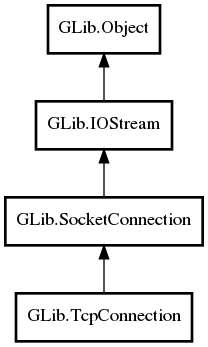

GLib.TcpConnection Reference Manual
Packages
gio-2.0
GLib
TcpConnection
graceful_disconnect
TcpConnection
get_graceful_disconnect
set_graceful_disconnect
TcpConnection
Object Hierarchy:

Description:
public
class
TcpConnection
:
SocketConnection
All known sub-classes:
TcpWrapperConnection
Namespace:
GLib
Package:
gio-2.0
Content:
Properties:
public
bool
graceful_disconnect
{
set
;
get
; }
Creation methods:
protected
TcpConnection
()
Methods:
public
bool
get_graceful_disconnect
()
public
void
set_graceful_disconnect
(
bool
graceful_disconnect)